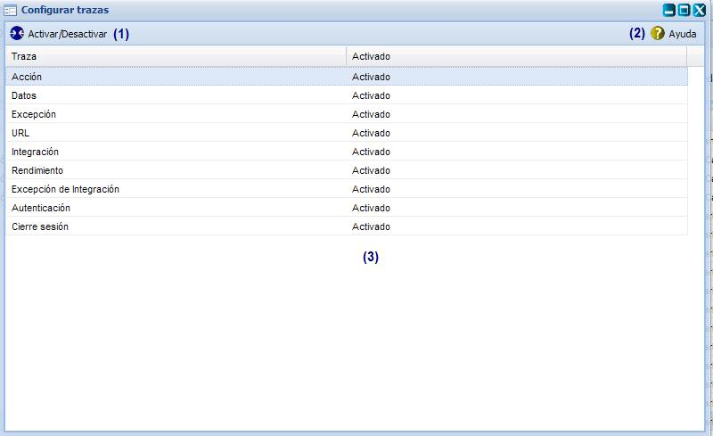
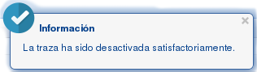
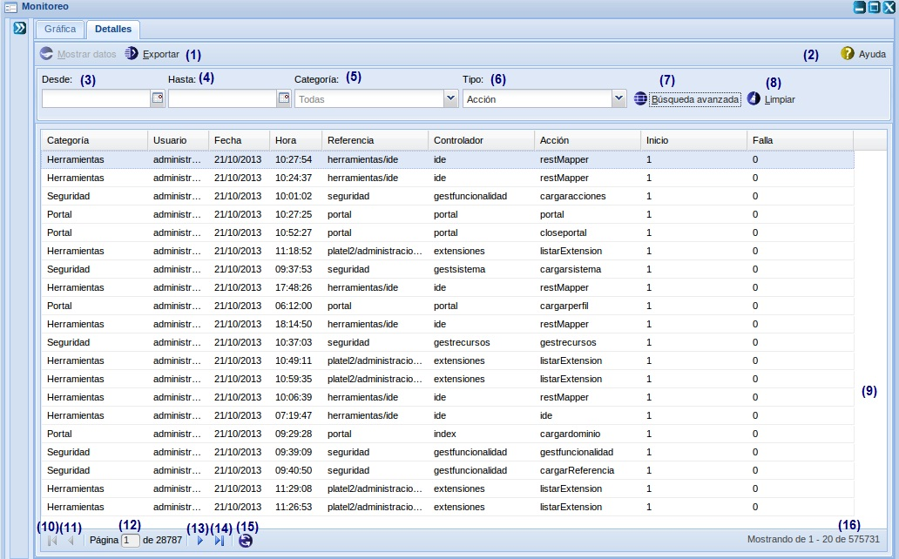
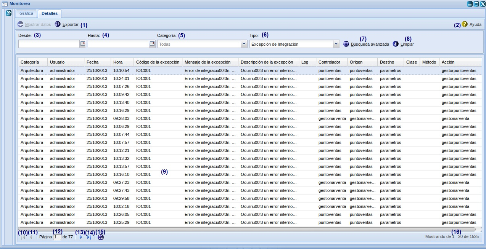

Sistema de registro de trazas de seguridad
2.1
13/3/15
Descripción:
Compuesto por:
- Zeolides 2.2.0
- Ayuda 3.0.0
Desarrollado por:
El presente manual tiene como objetivo explicar el funcionamiento del Subsistema de Traza garantizando una mejor utilización de las opciones que ofrece. Desarrollar una herramienta que permita registrar y monitorear los diferentes tipos de trazas de seguridad.
Traza es un subsistema que permite administrar las trazas de las aplicaciones incluyendo las trazas de datos, acción, excepción, integración, rendimiento, excepción de integración, autenticación y cierre de sesión. De igual modo realizar monitoreo de trazas teniendo en cuenta diferentes criterios. El mismo es fundamental para aduditorías y controles que se deseen ejecutar en el sistema integral de gestión de seguridad.
Descripción del sistema
El subsistema de seguridad está dividido en dos módulos: Configuración y Monitoreo de trazas.
El módulo Configurar traza permite Activa y desactiva las trazas desde una interfaz de configuración.
El módulo Monitoreo tiene como propósito monitorear las trazas por los diferentes reportes de cantidad por categoría, por fecha, por usuario y por tipo. Además muestra el monitoreo mediante gráficas y detalles por cada uno de los tipos de trazas.
¿Cómo acceder al subsistema de trazas?
En el menú de opciones del sistema, se debe seleccionar el subsistema Traza y se muestran los módulos correspondientes al mismo.
El subsistema de Seguridad cuenta con dos módulos que agrupan las funcionalidades que se llevan a cabo en el mismo, estos son: Configurar trazas (1), Monitoreo (2). Ver Figura 1.

Figura 1. Menú de opciones del subsistema de Traza.
A continuación se detallan las funcionalidades que contienen los módulos descritos anteriormente en el menú del subsistema.
Configuración
Esta funcionalidad permitirá activar o desactivar los diferentes tipos de trazas, según lo desea el usuario, ver Figura 2. Se accede a través de la opción Traza/Configurar trazas.

Figura 2. Interfaz Configurar traza.
Las opciones de la figura anterior permiten:
1. Activar o desactivar una traza previamente seleccionada, el sistema mostrará un mensaje de información sobre la acción realizada, ver Figura 3 y 4. Se puede realizar esta operación seleccionando la traza en el listado y oprimiendo las teclas (Ctrl+ Alt + T).

Figura 3. Mensaje de información, cuando se desactiva la traza.
 Figura 4. Mensaje de información, cuando se activa la traza.
Figura 4. Mensaje de información, cuando se activa la traza.
2. Mostrar la ayuda detallada de la funcionalidad.
Esta opción permite mostrar una ayuda desde el subsistema. Para esto se accede a una interfaz del subsistema que tenga creada una ayuda, se presiona el botón designado para la ejecución de la ayuda (ubicado en la esquina superior derecha), ver Figura 5, y se muestra la interfaz cuya referencia se configuró para la acción del botón de ayuda.

Figura 5. Interfaz Ayuda de la funcionalidad.
3. Mostrar el listado de las trazas.
Monitoreo en detalles
Esta funcionalidad permitirá gestionar el monitoreo de los detalles de las trazas. Permitiendo la búsqueda por los filtros de fecha, usuarios, susbsistemas, ip y tipos de trazas, ver Figura 6 . Se accede a través de la opción Inicio/Traza/Monitoreo/Detalles.

Figura 6. Interfaz Monitoreo de trazas.
Monitoreo en detalles. Trazas de acción
Esta funcionalidad permitirá monitorear las trazas de acción de la aplicación, además exportar las trazas y realizar la búsqueda por categorías o/y fechas, ver Figura 7. Se accede a través de la opción Traza/Monitoreo/Detalles.

Figura 7. Interfaz Monitoreo de traza de acción.
Las opciones de la figura anterior permiten:
- Exportar, ver acápite 1.1. Cuando se desea exportar una traza.
- Mostrar la ayuda detallada de la funcionalidad.
- El campo desde se despliega un menú con el calendario para escoger de forma sencilla la fecha para introducir en el parámetro de búsqueda. Se debe escoger una fecha siempre menor que la fecha hasta.
- El campo hasta se despliega un menú con el calendario para escoger de forma sencilla la fecha para introducir en el parámetro de búsqueda. Se debe escoger una fecha siempre mayor que la fecha desde.
- Escoger la categoría que deseas, para la traza de acción.
- Escoger la traza de acción.
- Limpiar el filtro de la búsqueda realizada. Se puede acceder a esta funcionalidad con las teclas (Alt + L).
- Mostrar un listado de las trazas de acción registradas.
- Ir a la primera página.
- Ir a la página anterior.
- Mostrar el número de la página donde se encuentra, puede introducir el número en caso de que desee buscar una específica.
- Ir a la página siguiente.
- Ir a la última página.
- Actualizar el listado de trazas registradas.
- Mostrar la cantidad de resultados encontrados.
Nota: Las opciones (9, (10), (12) y (13) se habilitarán cuando exista más de una página con datos en la interfaz.
Exportar traza

Figura 8. Interfaz Exportar traza de acción.
Las opciones de la figura anterior permiten:
1. Aceptar las acciones y cerrar la interfaz.
2. Cancelar las acciones y salir de la interfaz sin guardar los datos.
Monitoreo en detalles. Trazas de datos
Esta funcionalidad permitirá monitorear las trazas de datos de la aplicación, además exportar los reportes de las trazas y realizar la búsqueda por categorías o/y fechas, ver Figura 9. Se accede a través de la opción Traza/Monitoreo/Detalles.

Figura 9. Interfaz Monitoreo de traza de datos.
Las opciones de la figura anterior permiten:
1. Mostrar datos, ver acápite 1.1. Cuando se desea mostrar los datos de una traza de datos seleccionada.
2. Exportar, ver acápite 1.1 de la traza de acción, cuando se desea exportar una traza.
3. Mostrar la ayuda detallada de la funcionalidad.
4. El campo desde se despliega un menú con el calendario para escoger de forma sencilla la fecha para introducir en el parámetro de búsqueda. Se debe escoger una fecha siempre menor que la fecha hasta.
5. El campo hasta se despliega un menú con el calendario para escoger de forma sencilla la fecha para introducir en el parámetro de búsqueda. Se debe escoger una fecha siempre mayor que la fecha desde.
6. Escoger la categoría que deseas, para la traza de datos.
7. Escoger la traza de datos.
8. Búsqueda avanzada de la traza de datos, se muestra la interfaz con los datos de la misma, ver acápite Mostrar datos.
9. Limpiar el filtro de la búsqueda realizada. Se puede acceder a esta funcionalidad con las teclas (Alt + L).
10. Mostrar un listado de las trazas de datos registradas.
11. Ir a la primera página.
12. Ir a la página anterior.
13. Mostrar el número de la página donde se encuentra, puede introducir el número en caso de que desee buscar una específica.
14. Ir a la página siguiente.
15. Ir a la última página.
16. Actualizar el listado de trazas registradas.
17. Mostrar la cantidad de resultados encontrados.
Nota: Las opciones (9), (10), (12) y (13) se habilitarán cuando exista más de una página con datos en la interfaz.
Mostrar datos
Selecciona la traza que desea ver sus datos, se da doble click sobre esta y se muestra la interfaz, ver Figura 10.

Figura 10. Interfaz mostrar datos.
Las opciones de la figura anterior permiten:
1. Muestra el campo y el valor de la traza de datos seleccionada.
2. Salir de la interfaz
Monitoreo en detalles. Trazas de excepción
Esta funcionalidad permitirá monitorear las trazas de excepción en la aplicación, además exportar los reportes de las trazas y realizar la búsqueda por categorías o/y fechas y las búsquedas avanzadas, ver Figura 11. Se accede a través de la opción Traza/Monitoreo/Detalles.

Las opciones de la figura anterior permiten:
1. Exportar, ver acápite de la traza de acción, cuando se desea exportar una traza.
2. Mostrar la ayuda detallada de la funcionalidad.
3. El campo desde se despliega un menú con el calendario para escoger de forma sencilla la fecha para introducir en el parámetro de búsqueda. Se debe escoger una fecha siempre menor que la fecha hasta.
4. El campo hasta se despliega un menú con el calendario para escoger de forma sencilla la fecha para introducir en el parámetro de búsqueda. Se debe escoger una fecha siempre mayor que la fecha desde.
5. Escoger la categoría que deseas, para la traza de excepción.
6. Escoger la traza de excepción. Este campo es el único obligatorio y al hacer clic en él se fomenta la búsqueda.
7. Limpiar el filtro de la búsqueda realizada. Se puede acceder a esta funcionalidad con las teclas (Alt + L).
8. Mostrar un listado de las trazas de excepción registradas.
9. Ir a la primera página.
10. Ir a la página anterior.
11. Mostrar el número de la página donde se encuentra, puede introducir el número en caso de que desee buscar una específica.
12. Ir a la página siguiente.
13. Ir a la última página.
14. Actualizar el listado de trazas registradas.
15. Mostrar la cantidad de resultados encontrados.
Nota: Las opciones (9), (10), (12) y (13) se habilitarán cuando exista más de una página con datos en la interfaz.
Monitoreo en detalles. Trazas de integración
Esta funcionalidad permitirá monitorear las trazas de integración en la aplicación, además exportar los reportes de las trazas y realizar la búsqueda por categorías o/y fechas, ver Figura 12. Se accede a través de la opción Traza/Monitoreo/Detalles.
 Figura 12. Interfaz Monitoreo de traza de integración.
Figura 12. Interfaz Monitoreo de traza de integración.
Las opciones de la figura anterior permiten:
1. Exportar, ver acápite de la traza de acción, cuando se desea exportar una traza.
2. Mostrar la ayuda detallada de la funcionalidad.
3. El campo desde se despliega un menú con el calendario para escoger de forma sencilla la fecha para introducir en el parámetro de búsqueda. Se debe escoger una fecha siempre menor que la fecha hasta.
4. El campo hasta se despliega un menú con el calendario para escoger de forma sencilla la fecha para introducir en el parámetro de búsqueda. Se debe escoger una fecha siempre mayor que la fecha desde.
5. Escoger la categoría que deseas, para la traza de integración.
6. Escoger la traza de integración. Este campo es el único obligatorio y al hacer clic en él se fomenta la búsqueda.
7. Limpiar el filtro de la búsqueda realizada. Se puede acceder a esta funcionalidad con las teclas (Alt + L).
8. Mostrar un listado de las trazas de integración registradas.
9. Ir a la primera página.
10. Ir a la página anterior.
11. Mostrar el número de la página donde se encuentra, puede introducir el número en caso de que desee buscar una específica.
12. Ir a la página siguiente.
13. Ir a la última página.
14. Actualizar el listado de trazas registradas.
15. Mostrar la cantidad de resultados encontrados.
Nota: Las opciones (9), (10), (12) y (13) se habilitarán cuando exista más de una página con datos en la interfaz.
Monitoreo en detalles. Trazas de autenticación
Esta funcionalidad permitirá monitorear las trazas de autenticación en la aplicación, además exportar los reportes de las trazas y realizar la búsqueda por categorías o/y fechas y las búsquedas avanzadas, ver Figura 13. Se accede a través de la opción Traza/Monitoreo/Detalles.

Figura 13. Interfaz Monitoreo de traza de autenticación.
Las opciones de la figura anterior permiten:
1. Exportar, ver acápite de la traza de acción, cuando se desea exportar una traza.
2. Mostrar la ayuda detallada de la funcionalidad.
3. El campo desde se despliega un menú con el calendario para escoger de forma sencilla la fecha para introducir en el parámetro de búsqueda. Se debe escoger una fecha siempre menor que la fecha hasta.
4. El campo hasta se despliega un menú con el calendario para escoger de forma sencilla la fecha para introducir en el parámetro de búsqueda. Se debe escoger una fecha siempre mayor que la fecha desde. Cuando se selecciona una fecha, siempre tienes que seleccionar una menor que el día actual.
5. Escoger la categoría que deseas, para la traza de autenticación.
6. Escoger la traza de autenticación. Este campo es el único obligatorio y al hacer clic en él se fomenta la búsqueda.
7. Limpiar el filtro de la búsqueda realizada. Se puede acceder a esta funcionalidad con las teclas (Alt + L).
8. Mostrar un listado de las trazas de autenticación registradas.
9. Ir a la primera página.
10. Ir a la página anterior.
11. Mostrar el número de la página donde se encuentra, puede introducir el número en caso de que desee buscar una específica.
12. Ir a la página siguiente.
13. Ir a la última página.
14. Actualizar el listado de trazas registradas.
15. Mostrar la cantidad de resultados encontrados.
Nota: Las opciones (9), (10), (12) y (13) se habilitarán cuando exista más de una página con datos en la interfaz.
Monitoreo en detalles. Trazas de cierre de sesión
Esta funcionalidad permitirá monitorear las trazas de cierre de sesión en la aplicación, además exportar los reportes de las trazas y realizar la búsqueda por categorías o/y fechas y las búsquedas avanzadas, ver Figura 14. Se accede a través de la opción Traza/Monitoreo/Detalles.

Figura 14. Interfaz Monitoreo de traza de cierre de sesión.
Las opciones de la figura anterior permiten:
1. Exportar, ver acápite de la traza de acción, cuando se desea exportar una traza.
2. Mostrar la ayuda detallada de la funcionalidad.
3. El campo desde se despliega un menú con el calendario para escoger de forma sencilla la fecha para introducir en el parámetro de búsqueda. Se debe escoger una fecha siempre menor que la fecha hasta.
4. El campo hasta se despliega un menú con el calendario para escoger de forma sencilla la fecha para introducir en el parámetro de búsqueda. Se debe escoger una fecha siempre mayor que la fecha desde. Cuando se selecciona una fecha, siempre tienes que seleccionar una menor que el día actual.
5. Escoger la categoría que deseas, para la traza de cierre de sesión.
6. Escoger la traza de cierre de sesión. Este campo es el único obligatorio y al hacer clic en él se fomenta la búsqueda.
7. Limpiar el filtro de la búsqueda realizada. Se puede acceder a esta funcionalidad con las teclas (Alt + L).
8. Mostrar un listado de las trazas de cierre de sesión registradas.
9. Ir a la primera página.
10. Ir a la página anterior.
11. Mostrar el número de la página donde se encuentra, puede introducir el número en caso de que desee buscar una específica.
12. Ir a la página siguiente.
13. Ir a la última página.
14. Actualizar el listado de trazas registradas.
15. Mostrar la cantidad de resultados encontrados.
Nota: Las opciones (9), (10), (12) y (13) se habilitarán cuando exista más de una página con datos en la interfaz.
Monitoreo Gráficamente
Esta funcionalidad tiene como propósito gestionar el monitoreo de las trazas según el subsistema, la fecha, y el tipo. Permitiendo la búsqueda por los filtros de la fecha, subsistema, tipo de traza y la búsqueda avanzada. Además permite monitorear las trazas según el tipo de gráfica deseada ver Figura 15. Se accede a través de la opción Inicio/Traza/Monitoreo/Gráfica.

Las opciones de la figura anterior permiten:
1. Selecciona los tipos de reportes.
2. Mostrar la ayuda detallada de la funcionalidad.
3. Insertar la fecha desde donde se desea iniciar la búsqueda.
4. Insertar la fecha hasta donde se desea finalizar la búsqueda.
5. Seleccionar el susbsistema por el cual se desea filtrar la búsqueda. Existen otros tipos desusbsistemas por el cual se puede realizar la búsqueda, ver Figura 16.

6. Seleccionar el tipo de traza por la cual desea filtrar la búsqueda. Existen otros tipos de trazas por la cual se puede realizar la búsqueda, ver Figura 17.

Figura 17. Interfaz Monitoreo de trazas (Tipos de trazas).
7. Seleccionar los tipos de gráfica por la que se desea visualizar la información, ver Figura 18, 19 y 20.


Figura 20. Interfaz Monitoreo de trazas en gráfica.
8. Seleccionar si desea monitorear la información en tiempo real.
9. Realizar la búsqueda por el filtro de búsqueda avanzada, se muestran los campos de forma dinámica en dependencia del tipo de traza. Se puede acceder a esta funcionalidad con las teclas (Ctrl+ Alt + B).
10. Limpiar el filtro de la búsqueda realizada. Se puede acceder a esta funcionalidad con las teclas (Alt + L).
11. Mostrar la gráfica de las trazas según el filtro seleccionado.
Videos Tutoriales
|
Monitoreo en detalles Trazas de Acción
|
|
Monitoreo en detalles Trazas de Datos
|
|
Monitoreo en detalles Trazas de Integración
|
|
Monitoreo en detalles Trazas de Autenticación
|
|
Monitoreo en detalles Trazas de Cierre de Sesión
|
|
Monitoreo gráficamente |